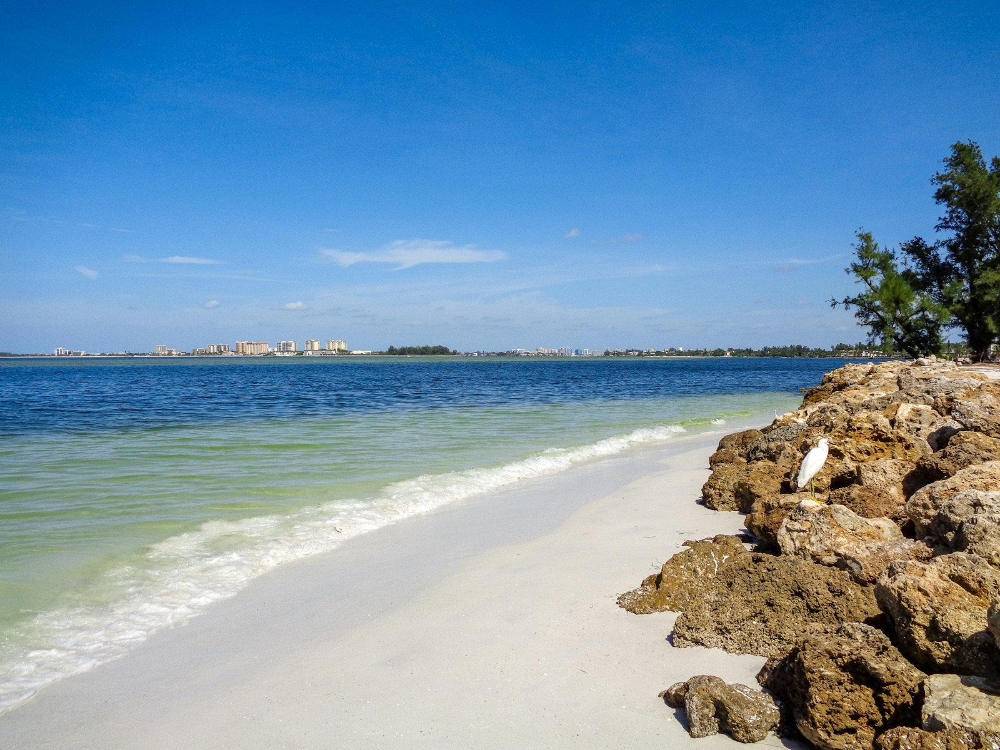

01

An eight-mile island joined to the mainland by two bridges.
From the U.S. Census Bureau and Visit Sarasota.
Island and county
Siesta Key is an eight-mile island. The route from U.S. 41 crosses the Stickney Point drawbridge, and a second bridge links the key to the mainland.
No city governs the island. It is a Census designated place in unincorporated Sarasota County, so county rules apply to a home here.
On the island a house is judged by how far it sits from the beach and from the Village, and by what the Gulf side means for the flood zone and the roof. Christina checks the flood zone and the roof age before an offer, and for a condo she reads the association documents first.

End to end
The island's shopping and dining district, with boutiques, bars and restaurants. visitsarasota.com
At the far south end of the key, with picnic and grilling facilities, restrooms and showers.
Every trip on or off the island crosses one of them, and the route from U.S. 41 crosses the Stickney Point drawbridge.
On the sand
The public beach with its pavilion, Sunset Point, and Crescent Beach on South Siesta Key.
Siesta Beach
The pavilion has restrooms, showers, a concession, a playground and beach volleyball. A Mobi-Mat runs from the pavilion onto the sand.

Sunset Point
Visit Sarasota lists Sunset Point, also called Patriots Pier, as the spot for watching the sun go down over the Gulf.
01 / 03
Homes for sale
01

02

03

04
Listing information is provided in part by Stellar MLS through IDX Broker.
On the key

“We purchased a beautiful home on Siesta Key in 13 days from first visit to closing thanks to Christina and her hard work… Christina was highly responsive from our first contact, anticipated our needs and worked with her contacts and networks to set up inspections, multiple contractors for quotes before we finalized our offer, attorneys for closing and locksmiths to re-key the property when we closed… We will use Christina again and we can’t say enough to recommend her.”
Cathie Gridley · Zillow, April 2026
From the Blog

Condominiums
Beach condos come with a budget, reserves and rules on rentals and pets that you can read before you write an offer.

Flood zones
A house near the Gulf starts with its zone and its elevation, and this shows how to look up both.

Inspections
The report an insurer asks for on an older island house, and what the inspector looks at for it.
Questions

No. It is a Census designated place with no city government, so Sarasota County sets the rules for a home on the key.
The island's shopping and dining district, with boutiques, bars and restaurants. The public beach and its pavilion are a separate stop on the Gulf side.
The association documents: the budget, the reserves, and the rules on rentals and pets. Christina reads them with you before you write an offer.
Yes, because this is an island. The zone and the elevation of the house both shape the insurance, and Sarasota Flood Zones shows how to look both up. 4-Point and Roof Inspections covers the roof.
The Sarasota County School District assigns schools by address, so the address you are looking at decides it.
Nearby communities

Talk to Christina
Book a call and tell Christina which side of the island you have in mind. For a condo she reads the association documents first; for a house she pulls the flood zone and the roof age before you tour it.